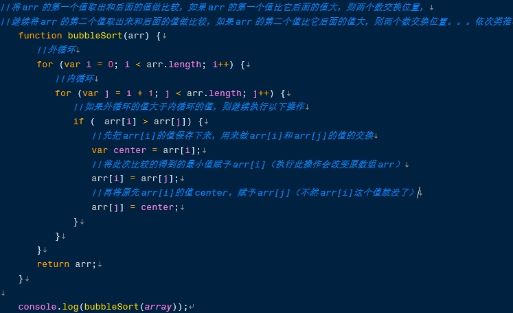
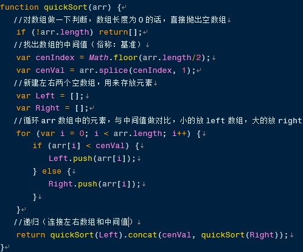
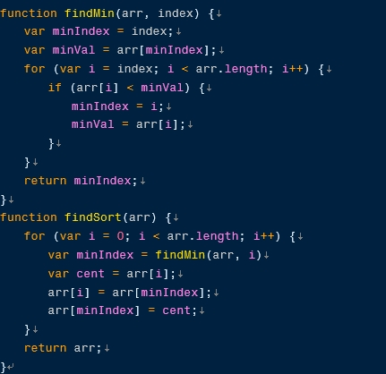

编辑于2018年6月|浏览:642
说明：
时间复杂度指的是一个算法执行所耗费的时间
空间复杂度指运行完一个程序所需内存的大小
稳定指，如果a=b,a在b的前面，排序后a仍然在b的前面
不稳定指，如果a=b，a在b的前面，排序后可能会交换位置
var array = [23, 38, 22, 45, 23, 67, 31, 15, 41]
冒泡：
工作原理：
每次两个相邻的数进行比较，有较大的就放到后面，一轮下来，最后一位是最大的数，然后第二轮排序到倒数第二个截止，找出第二大的数，以此类推。
算法是稳定算法，时间复杂度为O(n^2),空间复杂度为1

快排
工作原理：
从数组中选定一个基数，然后把数组中的每一项与此基数做比较，小的放入一个新数组，大的放入另外一个新数组。然后再采用这样的方法操作新数组。直到所有子集只剩下一个元素，排序完成。
属于不稳定排序！

选择排序
工作原理：
是一种简单直观的排序算法。其基本思想是：首先在未排序的数列中找到最小(or最大)元素，然后将其存放到数列的起始位置；接着，再从剩余未排序的元素中继续寻找最小(or最大)元素，然后放到已排序序列的末尾。以此类推，直到所有元素均排序完毕。
是不稳定算法，比如序列5 8 5 2 9，
我们知道第一遍选择第1个元素5会和2交换，那么原序列中2个5的相对前后顺序就被破坏了，所以选择排序 不是一个稳定的排序算法
时间复杂度较差，为O(n^2).空间复杂度为1
